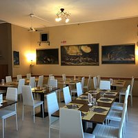
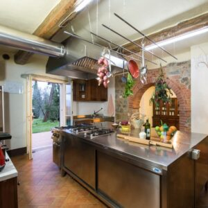

I nostri sapori
“Piatti che raccontano”
I nostri piatti tipici raccontano una storia fatta di tradizione, territorio e passione per la buona cucina. Ogni ricetta nasce da ingredienti genuini e da saperi tramandati nel tempo, custoditi con cura e rispetto.
Qui troverai sapori autentici, preparazioni che seguono la stagionalità e il gusto vero della cucina di una volta, rivisitata senza perdere la sua anima. Un viaggio tra profumi e sapori che parlano di casa, di convivialità e di identità.
Lasciati guidare alla scoperta della nostra tradizione, un piatto alla volta.
Di seguito, troverai i migliori ristoranti di scanzorosciate, e una scelta di piatti da poter replicare in facilità
I nostri ristoranti

Il nostro territorio offre una ricca varietà di ristoranti dove tradizione e qualità si incontrano. Dalle trattorie storiche ai locali più moderni, ogni ristorante propone un’esperienza unica, fatta di accoglienza, cura dei dettagli e passione per la cucina. Qui potrai scoprire luoghi dove il buon cibo diventa convivialità, dove ogni piatto è preparato con attenzione e racconta l’identità di chi lo cucina.
Controlla i cinque migliori ristoranti di scanzorosciate. Clicca subito!
I nostri piatti: Moscato di Scanzo e Gastronomia

I piatti tipici sono l’espressione più autentica della nostra tradizione gastronomica. Ricette nate dalla storia e dalla cultura del territorio, realizzate con ingredienti semplici e genuini, che conservano sapori veri e riconoscibili.
Ogni piatto racchiude un legame profondo con le nostre radici e rappresenta un invito a riscoprire il gusto della cucina locale, tramandata di generazione in generazione
Scopri di più sui piatti e sulle loro ricette